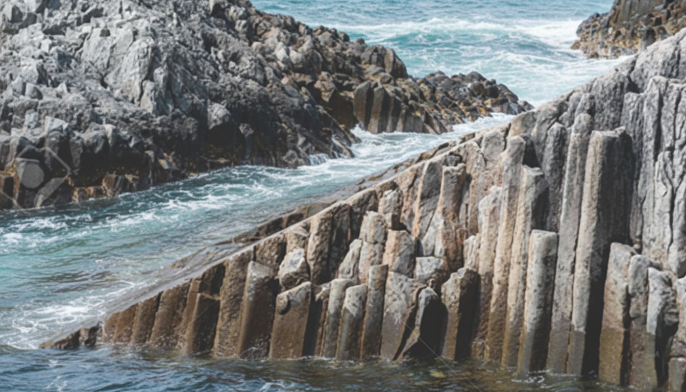
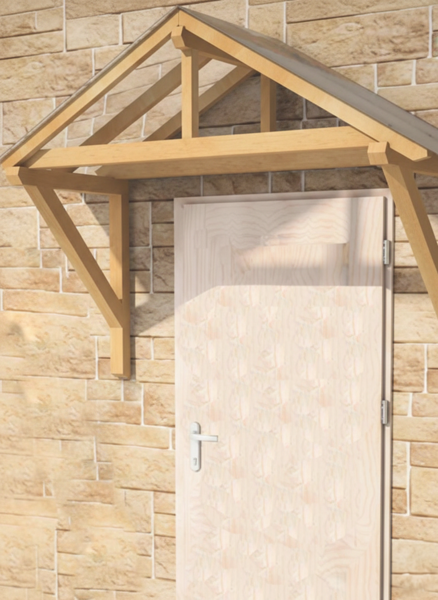

Bu materyalde Eğik Prizma konusu üzerinde çalışacaksınız.
Uygulama Adımları:
Uygulama 1: Yüzeyleri belirleme ve açınımı tanıma
Uygulama 2: Yüzey alanı hesaplama
Uygulama 3: Hacim hesaplama
Serbest: Kendi eğik prizmanı oluşturma ve keşfetme
İpuçları: Araç çubuğundan döndürme, zoom, yüz boyama, cetvel ve açı ölçer özelliklerini kullanabilirsiniz.
Görseldeki sehpanın ayakları hangi geometrik cisme benzemektedir?

🏝 Kuril Adaları görseli
Kuril Adaları, Büyük Okyanus ile Ohotsk Denizi arasında 1300 km boyunca uzanan 56 adadan oluşan bir ada takımıdır. Adaların kıyıları volkanik hareketler ve dalgalar sebebiyle sütun biçimini almış bazalt kayalıklardan oluşmuştur.
Kayalar hangi geometrik cisme benzemektedir?
Gerçek Hayattan Bir Örnek

Kapı, pencere ya da herhangi bir geçidin girişini yağmur, rüzgar, güneş gibi dış etmenlerden koruyan küçük çatı benzeri yapılara sundurma adı verilir. Sundurmalar farklı boyutlarda kesilmiş ahşap veya metal parçalar birleştirilerek yapılır.
Sundurmayı oluşturan parçalar hangi geometrik cisimlere benzerdir?
Ölçme ve Değerlendirme
Soru
Aşağıda bazı ölçüleri verilen eğik prizma ile aynı tabana ve yüksekliğe sahip olan dik prizmanın yüzey alanını hesaplayınız.